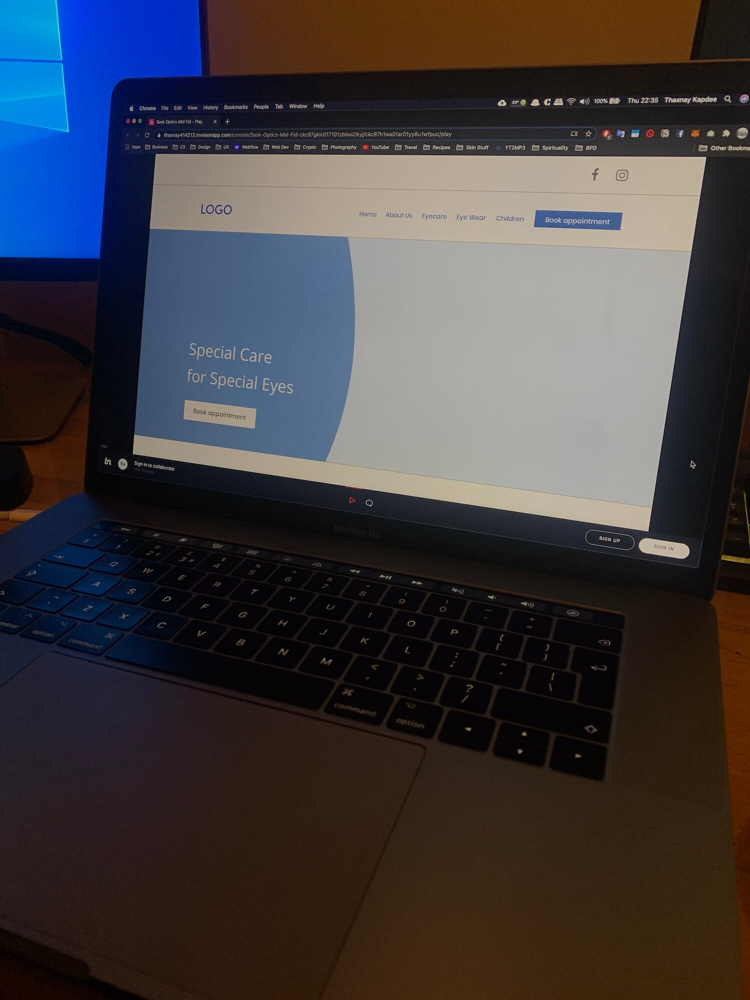

My Process
Discover
User and Stakeholder Interviews
First and foremost, it was vital to get insight into the Sask Optics brand. Through interviews with both users and stakeholders, it was possible to gain several insights with a balanced perspective. I organised my findings into an affinity map to gain clarity on the key insights; these would provide me with focus for the entire project.

User Persona
From the deep-dive into my clients’ brand, I used the findings to construct a persona, Chloe, to help me understand how I can help her/our users achieve their goal on the new website in the best possible way.
Define
Sketching
With enough information on hand from the previous phases, I could start the visualisation process. This took the form of some basic preliminary sketches to quickly scribble and annotate various ideas for how my primary user could navigate information within the website.
Information Architecture
Having reached a core understanding of Sask Optics, their users and persona, I mapped out the information architecture to display the site structure. This site map was a way to not only lock in all the content, but distribute across the site in such a way that it makes for a comfortable user journey.
Ideation
Low Fidelity Wireframes
By now I had enough information to begin wireframing the design. With the core features and needs in mind, I put together a rough visual layout of what I envisioned for the final product. During this phase, I emphasised on the need for spacious design.
Mid Fidelity Wireframes
Once I had made a note of the key user tasks I will be testing for in the next step, I created this set of mid-fidelity wireframes. These screens held the necessary design and information that made it possible for a user to navigate them.
Prototype
Mid-Fidelity Prototype
Once I was confident in my mid-fidelity wireframe, I swiftly moved on to creating the InVision Prototype. You can view the prototype by clicking here.
Validating
User Testing Validation
Conducting user testing on my mid-fidelity prototype allowed me to identify how users would perform certain tasks under a provided setting. The goal was to identify pain points that could be improved in future iterations. Tasks I tested for:
- Booking an appointment from any screen
- Finding out more information on Sask’s Optics services
- Locating the nearest Sask Optics store
Pain Points and Solutions
UI
Style Guide
With my wireframes locked down, the UI was ready to be designed. I wanted to create a language that was cohesive with Sask Optics pre-existing logo and in-store visual identity. My client was keen to maintain a simplistic, yet trustworthy feeling, so it was vital not to overload the user with an overload of visuals. Fortunutely, Sask Optics used red for it's existing logo, a colour that speaks trust. I was able to expand on this with a minimal pallette, friendly icons and sleek presentation.
High Fidelity Mockups
Final Outcome
User Feedback
To test the new website, several users from usertesting.com were asked to use the website, answer questions and complete tasks. Users were asked to enter the site with the frame of mind of booking an eye test, finding out about Sask Optics services or wanting to find an independent optician who sells niche, classy eyewear.
"Looks like a classy, up-market and high-end brand on first impressions."
"Text layout and information was perfect size for skim reading."
"Looks to be in the same league as industry leading opticians."
"I know what the site is offering me, and where I can find it easily."
"The site makes me feel like it's a trustworthy brand."
"Wish I could see a list view of all eyewear selection."
Results
On inspection of Google Search Console it was evident that even in the short space of time (20 days) the site had gone live, the passion and care put into the User Experience and Interface of the new site had started paying off; on the day the site went live the average position jumped from its average of 44 to 34. It is currently climbing, and ranks at 26, a huge improvement!
Reflection
Learnings
Creating an end-to-end website solution and design system was certainly a large undertaking. I needed to embody the physical experience, and translate it perfectly into a contemporary digital standard. Through surveys and interviews, I was able to validate Sask Optics current brand outlook and also discover that most people wanted an online experience that was classy, upmarket and allowed for easy booking, especially when they first launched the site. It was vital to create a consistent design language whilst staying true to the information that needed to be delivered, so conducting a full audit of the website helped me stay organized and focused on the big picture.
Matching the existing aesthetic while having freedom with visual elements was also challenging because I was free to run with ideas, but not deviate too much from the original aesthetic. I’m please with the end result which has many hints of the in-store experience, but with new twists appropriate for a modern web experience
Client Feedback
"Thaxnay has been excellent to work with throughout the entire process of our brand-new website development. From the first phone call to the final sign off, the service has been faultless. What I found particularly impressive was that he really took the time to listen to what you want and give appropriate suggestions. He works with your ideas and helps to fulfil the vision. I would highly recommend him and would not hesitate to contact him again for any future projects."
Harpeet Mann, Director at Sask Optics.


Information Architecture was poorly defined